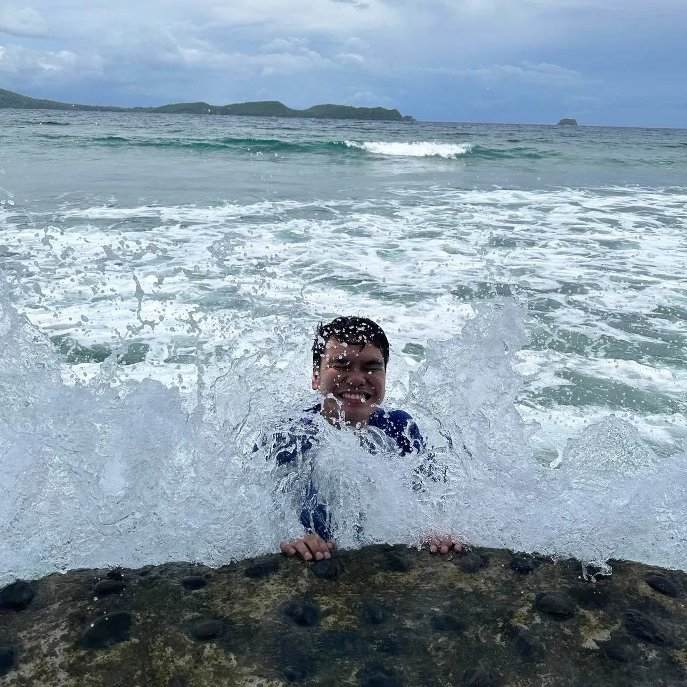

Some ideas need
a change of scenery.
I’ve travelled to several countries, sometimes on my own. Curiosity gets me moving. The water usually gets my vote.

Just add water.
If a trip involves the sea, a swim, or time by the water, I’m interested. There is something about stepping away from a screen and straight into a wave.
Research on the brain.
Salt water in the heart.
Sometimes, curiosity
comes with an invitation.
I also travel to present at conferences, speak at a university’s invitation, or attend a conference I’ve been accepted to. Learning and exploring often end up on the same itinerary.
My professional profile includes a Best Oral Presentation award at ICCCI 2024 in Japan.
Back to the research
Take the scenic route.
A few places, a few seasons, and plenty of reasons to look around. Filter the album or open a photo for a closer look.


14 travel memories
Adventurous?
Definitely.
I’m a risk taker, and a few minor accidents have made their way into my stories. They’re part of the less polished, very human side of the adventure.
A sense of adventure. A few lessons learned.